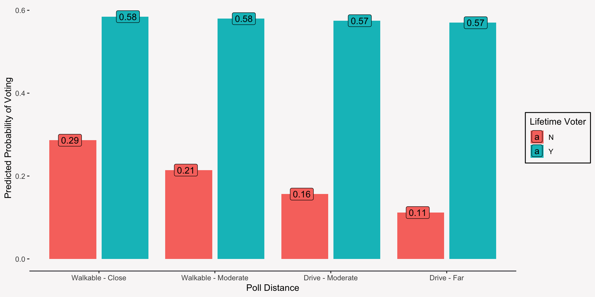

Interactions & Model Building in Logistic Regression
Overview for Today
Today we will be learning about:
Interpreting & testing interactions using logistic regression
Testing competing models
Review of Logistic Regression
A few things to keep in mind:
Use logistic regression when your outcome is binary.
Transform your regression coefficients using the exponential function before interpreting.
Transformed regression coefficients are odds ratios.
Statistical testing is identical to linear regression
Who Votes?
You’re a policy analyst trying to predict voter turnout for a given region. You have the following information on voters for the previous election:
Did they vote in the previous election [Outcome]
Age
Gender
Are they a lifetime voter (voted in multiple previous elections)
Proximity to voting location
Look at Our Data
First, let’s look at our dataset:
# A tibble: 5,000 × 7
vote gender age age_std life_vote vote_dist vote_dist_num
<chr> <chr> <int> <dbl> <chr> <chr> <int>
1 Y M 71 1.79 N Walkable - Moderate 1
2 Y M 46 -0.0243 Y Drive - Moderate 2
3 Y M 48 0.120 Y Walkable - Moderate 1
4 N M 62 1.13 Y Walkable - Moderate 1
5 Y M 51 0.338 Y Drive - Moderate 2
6 N M 18 -2.05 Y Drive - Moderate 2
7 N F 35 -0.821 Y Drive - Far 3
8 N F 59 0.917 N Drive - Moderate 2
9 N F 32 -1.04 N Drive - Moderate 2
10 N F 26 -1.47 Y Drive - Moderate 2
# ℹ 4,990 more rows
Interactions are conditional effects—the effect of a focal predictor may change based on the value of another predictor (moderator variable):
The effect of ability [P] on performance [O] conditional on motivation [M]
The effect of a personality trait [P] on a behavior [O] conditional on the setting [M]
The effect of formal planning behaviors [P] on new venture success conditional on the level of formal planning behaviors [M]
Interaction (Moderation) Jargon from Quant 1
When reading about moderation, you will likely come across several of these terms:
Focal Predictor: Predictor who’s relationship with the outcome is changing because of the moderator.
Moderating Variable: Predictor that is altering (moderating) the relationship between the focal predictor and outcome.
Conditional Effects: The effect of the focal predictor at a specific value of the moderator.
Interactions in Our Example
We want to know if the effect of polling distance on voting changes based on whether a voter is a lifetime voter or not. Does lifetime voting status interact with polling distance to predict voting behavior?
Modeling an Interaction as a Cross-Product
To estimate an interaction effect, we create a new variable that is the product of the focal predictor and the moderator:
Is the z-value (test statistic) of the cross-product term larger than 1.96? If yes, then the interaction is significant.
Plotting the Interaction

Interpreting the Interaction (the Difficult Part)
Because the effects of the predictor change based on the levels of the moderator, we have to calculate the odds ratio at different levels of the moderator to get a clear understanding of the effect of the predictor.
\[\text{OR}=\exp(\beta_1 + \beta_2\times Z)\]
Interpreting the Interaction (the Difficult Part)
For lifetime voters, the odds of voting stay roughly the same regardless of polling distance, adjusting for gender and age—the odds decrease by ~2% for evey unit increase in polling distance. For non-lifetime voters, the odds of voting decrease by ~32% for each unit increase in polling distance, adjusting for gender and age.
# Calculating conditional effect of polling distance for Lifetime Voter = 1(-.386+ .366*1) |>exp()# Calculating conditional effect of polling distance for Lifetime Voter = 0 (-.386+ .366*0) |>exp()
[1] 0.98
[1] 0.68
Modeling a Nonlinear Effect as a Cross-Product
To estimate the nonlinear effect of a predictor, you need to create a new variable that is the cross-product (or squared term) of the predictor with itself. Think of this as a variable interacting with itself—its effect on the outcome changes depending on the levels of the predictor variable.
Interpreting nonlinear effects in a logistic regression model is hard! Because the odds ratio changes at different levels of the predictor, you need to calculate it at these different levels using the following formula:
In the late teens (1.62 sds below the mean of 46.34), a standard deviation increase in age increases the odds of voting by 127%. At average age, a standard deviation increase in age increases the odds of voting by 5%. At older ages (1.71 sds above the mean), a standard deviation increase in age decreases the odds of voting by 54%. While adjusting for gender, lifetime voter status, and distance from the polls.
# Low Value of Standardized Age: - 1.62(.28+-.24+2*-.24*-1.62) |>exp()# Median Value of Standardized Age: -.02(.28+-.24+-.24*-.02) |>exp()# High Value of Standardized Age: 1.71(.28+-.24+2*-.24*1.71) |>exp()
[1] 2.27
[1] 1.05
[1] 0.46
Model Building with Logistic Regression
Model building is more art than science.
You decide which predictors to include or drop from your logistic regression model based on a combination of theory and statistical evidence.
You should use your theory to decide the universe of variables you are interested in and statistical evidence to determine which of those variables truly have an effect on your outcome variable.
Algorithmic Selection vs Purposeful Selection
Once you have decided on the universe of variables you are interested in, there are two broad ways you can use statistical models to determine which of those variables are significant:
Algorithmic Selection like stepwise variable selection
Purposeful Selection: A systematic and thoughtful approach to variable selection
Algorithmic selection can result in a final model that does not make a lot of sense, so we will focus on purposeful selection.
Steps to Purposeful Selection
Do this for each outcome variable you are investigating:
List all the hypotheses you have that relate to that outcome variable.
Build a model that includes all the predictor variables and interactions needed to test each hypothesis and all the necessary control variables.
If you have any non-significant interaction and/or nonlinear variables, drop them.
Drop any non-significant main effects that are not a part of significant interactions or nonlinear variables. This is your final model that tells you which hypotheses were supported.
Follow-up with model diagnostics to ensure your model fits your data well enough.
A Note on Purposeful Selection
Remember, model building is more art than science! The steps on the last slide should serve as a guide for you, especially early on in your model building career, but as you get more experience building models, you can deviate from these steps.
Pruposeful Selection with Our Models
Our hypotheses:
H1. Age is nonlinearly related to voting behavior such that there is a positive relationship between age and voting behavior when voters are younger and a negative relationship when voters are older.
H2. For first time voters, there is a negative relationship between poll distance and voting behavior such that the further away their voting poll is, the less likely they are to vote. For lifetime voters, there is no relationship between poll distance and voting behavior.
Model Building with Purposeful Selection
# Build a model that contains all of our hypothesized effects and controlsmod_1 <-glm(vote ~ gender + age_std + age_std_sq + vote_dist_num * life_vote,data = data_vote, family =binomial(link ="logit"))
Call:
glm(formula = vote ~ gender + age_std + age_std_sq + vote_dist_num *
life_vote, family = binomial(link = "logit"), data = data_vote)
Coefficients:
Estimate Std. Error z value Pr(>|z|)
(Intercept) -0.67473 0.18443 -3.659 0.000254 ***
genderM -0.04511 0.06085 -0.741 0.458544
age_std 0.27467 0.03165 8.679 < 2e-16 ***
age_std_sq -0.24115 0.02430 -9.924 < 2e-16 ***
vote_dist_num -0.36986 0.10226 -3.617 0.000298 ***
life_voteY 1.31860 0.19607 6.725 1.75e-11 ***
vote_dist_num:life_voteY 0.33981 0.10980 3.095 0.001970 **
---
Signif. codes: 0 '***' 0.001 '**' 0.01 '*' 0.05 '.' 0.1 ' ' 1
(Dispersion parameter for binomial family taken to be 1)
Null deviance: 6931.0 on 4999 degrees of freedom
Residual deviance: 6238.8 on 4993 degrees of freedom
AIC: 6252.8
Number of Fisher Scoring iterations: 4
Model Building with Purposeful Selection
# If we had non-significant interactions or nonlinear terms we would drop them.# Drop any non-significant main effects that are not a part of significant # interactions. mod_2 <-glm(vote ~ age_std + age_std_sq + vote_dist_num * life_vote, data = data_vote, family =binomial(link ="logit"))# Use your model to determine which of your hypotheses are supported.
Call:
glm(formula = vote ~ age_std + age_std_sq + vote_dist_num * life_vote,
family = binomial(link = "logit"), data = data_vote)
Coefficients:
Estimate Std. Error z value Pr(>|z|)
(Intercept) -0.69941 0.18142 -3.855 0.000116 ***
age_std 0.27490 0.03165 8.687 < 2e-16 ***
age_std_sq -0.24114 0.02430 -9.925 < 2e-16 ***
vote_dist_num -0.36981 0.10227 -3.616 0.000299 ***
life_voteY 1.31806 0.19607 6.722 1.79e-11 ***
vote_dist_num:life_voteY 0.34016 0.10981 3.098 0.001950 **
---
Signif. codes: 0 '***' 0.001 '**' 0.01 '*' 0.05 '.' 0.1 ' ' 1
(Dispersion parameter for binomial family taken to be 1)
Null deviance: 6931.0 on 4999 degrees of freedom
Residual deviance: 6239.3 on 4994 degrees of freedom
AIC: 6251.3
Number of Fisher Scoring iterations: 4